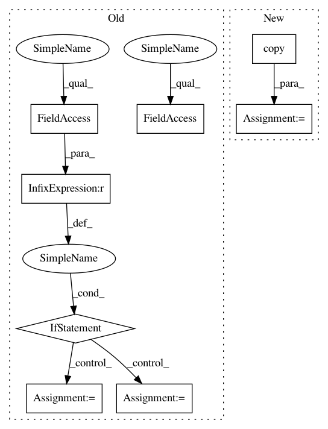

1e70ad1ef88b58191fd02f8668557fbee3c63dc0,lib/face_alignment/extractor.py,Frame,__init__,#Frame#Any#Any#Any#Any#,23
Before Change
self.verbose = verbose
self.height, self.width = input_image.shape[:2]
if not VRAM.scale_to and VRAM.device != -1:
VRAM.set_scale_to(detector)
if VRAM.device != -1:
self.scale_to = VRAM.scale_to
else:
self.scale_to = self.height * self.width
self.input_scale = 1.0
self.images = self.process_input(input_image,
input_is_predetected_face)
After Change
self.input_scale = 1.0
self.image_bgr = input_image
self.image_rgb = input_image[:, :, ::-1].copy()
self.image_detect = self.scale_image(input_is_predetected_face,
detector)
def scale_image(self, input_is_predetected_face, detector):
In pattern: SUPERPATTERN
Frequency: 4
Non-data size: 8
Instances
Project Name: deepfakes/faceswap
Commit Name: 1e70ad1ef88b58191fd02f8668557fbee3c63dc0
Time: 2018-08-09
Author: 36920800+torzdf@users.noreply.github.com
File Name: lib/face_alignment/extractor.py
Class Name: Frame
Method Name: __init__
Project Name: IBM/adversarial-robustness-toolbox
Commit Name: abb1451d02700cfb573ef4093b2c2eaa595ec727
Time: 2020-11-27
Author: giulio@li-87b782cc-261a-11b2-a85c-fc0eec425ab4.ibm.com
File Name: art/attacks/evasion/projected_gradient_descent/projected_gradient_descent_pytorch.py
Class Name: ProjectedGradientDescentPyTorch
Method Name: generate
Project Name: IBM/adversarial-robustness-toolbox
Commit Name: abb1451d02700cfb573ef4093b2c2eaa595ec727
Time: 2020-11-27
Author: giulio@li-87b782cc-261a-11b2-a85c-fc0eec425ab4.ibm.com
File Name: art/attacks/evasion/projected_gradient_descent/projected_gradient_descent_tensorflow_v2.py
Class Name: ProjectedGradientDescentTensorFlowV2
Method Name: generate
Project Name: deepfakes/faceswap
Commit Name: 9696b5606fd0963814fc0c3644565aa60face69d
Time: 2018-07-10
Author: 36920800+torzdf@users.noreply.github.com
File Name: lib/face_alignment/extractor.py
Class Name: Frame
Method Name: __init__
Project Name: deepfakes/faceswap
Commit Name: 1e70ad1ef88b58191fd02f8668557fbee3c63dc0
Time: 2018-08-09
Author: 36920800+torzdf@users.noreply.github.com
File Name: lib/face_alignment/extractor.py
Class Name: Frame
Method Name: __init__